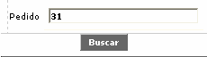
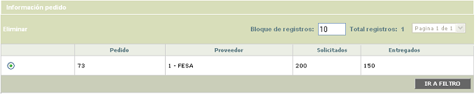
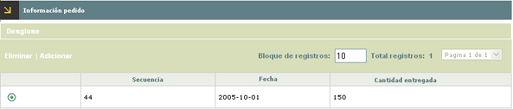
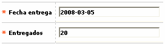
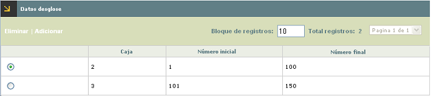
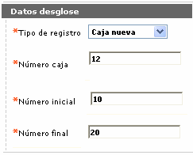
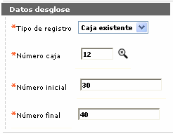
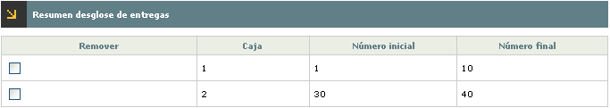

Registro de entregas
Mediante esta opción que se invoca desde el formulario Inventario de plásticos se registran las entregas parciales o totales de plásticos que los proveedores hacen a la entidad como resultado de los pedidos generados.
Al ingresar a la opción, se muestra un filtro que le permite al usuario digitar el número del pedido para el cual se van a registrar las entregas.

Por defecto, al ingresar al formulario se muestran todos los registros existentes indicando para cada uno el número del mismo, el proveedor a quien se le hizo, la cantidad solicitada y la cantidad entregada.

El formulario solo contiene el hipervínculo Información pedido
Información pedido: si el usuario selecciona un registro e invoca el hipervínculo Información pedido se despliega un formulario en el cual se muestran las entregas de plásticos que el proveedor haya hecho a la entidad en cumplimiento del pedido efectuado, indicando la secuencia de entrega, la fecha en que se registró y la cantidad entregada.

El formulario contiene el hipervínculo Desglose, que permite registrar el detalle de los plásticos entregados a la entidad por parte del proveedor. Adicionalmente, cuenta con las opciones Eliminar y Adicionar.
Adicionar: Al activar ese enlace, se despliega un formulario en el cual se registran las entregas que sobre el pedido haya efectuado el proveedor. Las entregas registradas afectan automáticamente el campo Existencias contenido en el formulario Inventario de plásticos.

Descripción de campos
|
Fecha entrega |
Campo obligatorio en el que se registra en formato YYYY-MM-DD la fecha en la que el proveedor hizo entrega de los plasticos pedidos a la entidad. |
|
Entregados |
Este campo obligatorio permite indicar la cantidad de plásticos que el proveedor entregá a la entidad. |
Desglose: si desde el formulario Información de pedidos el usuario selecciona un registro e invoca el hipervínculo Desglose, el sistema despliega formulario en el cual se muestran el desglose o detalle de las cajas y plasticos registrados para cada una de las entregas efectuadas por el proveedor.

Descripción de campos
|
Caja |
Indica el número asignado a cada una de las cajas con los plasticos entregados por el proveedor. |
|
Número inicial |
Muestra el consecutivo inicial a partir del cual comienza el grupo de plásticos entregados por el proveedor para cada caja. |
|
Número final |
En este campo numérico se despliega el consecutivo final hasta donde va el grupo de plásticos de cada caja que fueron entregados por el proveedor. |
El formulario cuenta con las opciones adicionar y eliminar.
Adicionar: si el actor invoca la opci >ón adicionar se despliega un wizard de dos pasos en el cual la entidad puede registrar de manera detallada los números de cajas o lotes y los consecutivos de los plásticos contenidos en ellos, que fueron entregados por el proveedor. Esta información será utilizada posteriormente por el sistema durante la etapa de control de inventario.
En la primera página del wizard, se ingresa la información de las diferentes cajas y plásticos entregados para cada una de las entregas parciales efectuadas por el proveedor.

.

Descripción de campos
|
Tipo de registro |
Campo obligatorio tipo combo que contiene los enlaces:Caja nueva o Caja existente, para indicar si los plásticos a registras corresponden a alguno de los lotes ya ingresados o si es un lote nuevo. |
|
Número de caja |
En este campo obligatorio, se registra el número de la caja a la que pertenecen los plasticos entregados. Dependiendo de la opción seleccionada en el campo anterior, este campo permite digitar información directamente o habilita una lista de valores para seleccionar la caja correspondiente. |
|
Número inicial |
Campo numérico obligatorio en el que se indica el consecutivo inicial a partir del cual comienza el grupo de plásticos entregados por el proveedor. Cuando en el campo Tipo de registro se haya indicado Caja existente, este campo se llena automáticamente con la secuencia inmediatamente siguiente a la última registrada para la caja o lote. |
|
Número final |
En este campo numérico obligatorio, se registra el consecutivo final hasta donde va el grupo de plásticos entregados al proveedor. |
Después de haber ingresado el desglose para una secuencia de entrega, mediante el segundo botón del wizard se van adicionando uno a uno los desgloses y luego al desplazarse a la segunda página se muestra el resumen de todos desplegando para cada uno el modelo, la caja, número inicial y número final. El formulario cuenta con un check que permite marcar aquellos desgloses que ya no se desea registrar en el sistema.

El sistema controla que la cantidad total de los plásticos ingresados en cada desglose para una misma secuencia y pedido sea igual a la cantidad registrada como entregada para dicha secuencia. De igual manera se controla que las secuencias de los plásticos dentro de una misma caja y modelo no se sobrepongan entre si.
Eliminar: el sistema permite eliminar un desglose siempre y cuando ninguno de los plásticos pertenecientes a la caja haya sido utilizado para realce o se encuentre registrado como averiado